constant_schedule = LightSchedule(100.0)Lights
Defines a helper class for creating light schedules and implements typical schedules used in circadian models
LightSchedule.__add__
LightSchedule.__add__ (schedule:__main__.LightSchedule)
Calculate the sum of the two LightSchedules
| Type | Details | |
|---|---|---|
| schedule | LightSchedule | another LightSchedule object |
| Returns | LightSchedule |
LightSchedule.__sub__
LightSchedule.__sub__ (schedule:__main__.LightSchedule)
Calculate the difference between two LightSchedules
| Type | Details | |
|---|---|---|
| schedule | LightSchedule | another LightSchedule object |
| Returns | LightSchedule |
Overview
The Lights module streamlines the process of creating light schedules for circadian models. Its main class is LightSchedule which facilitates creating light functions of time. LightSchedule objects can be added, subtracted, and concatenated between each other to create custom light schedules.
Creation and visualization
Light schedules can be created by passing either a float value or a function to the LightSchedule constructor. For example, we can create a schedule of constant light by:
and plot it between 0 and 72 hours using the plot method:
ax = constant_schedule.plot(0.0, 72.0)
ax.set_xlabel('Time (hours)');
ax.set_ylabel('Light (lux)');
ax.set_ylim(0.0, 120.0);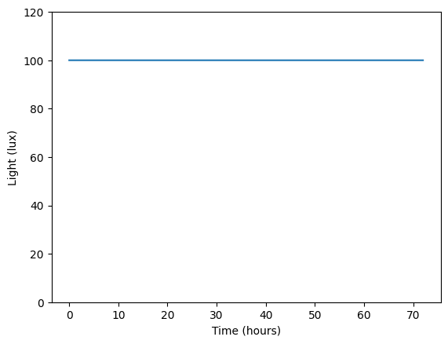
If we want to create a schedule that varies over time, we can pass a function to the constructor:
def smooth_pulse_function(time):
rise = np.tanh((time - 7.0))
fall = np.tanh((time - 20.0))
y = 100 * (rise - fall) / 2.0
return y
smooth_pulse = LightSchedule(smooth_pulse_function)
ax = smooth_pulse.plot(0.0, 72.0)
ax.set_xlabel('Time (hours)');
ax.set_ylabel('Light (lux)');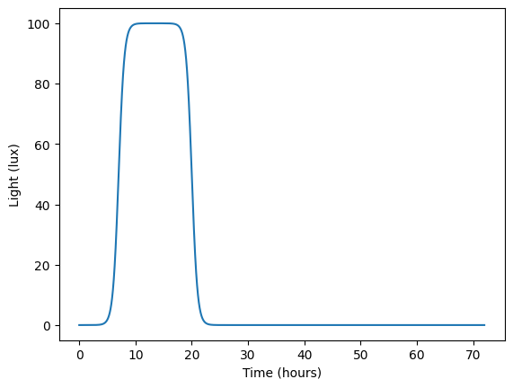
Additionally, the LightSchedule constructor accepts a period argument which allows us to specify the periodicity of the schedule. For example, we can make the smooth pulse repeat every 24 hours:
smooth_pulse = LightSchedule(smooth_pulse_function, period=24.0)
ax = smooth_pulse.plot(0.0, 72.0)
ax.set_xlabel('Time (hours)');
ax.set_ylabel('Light (lux)');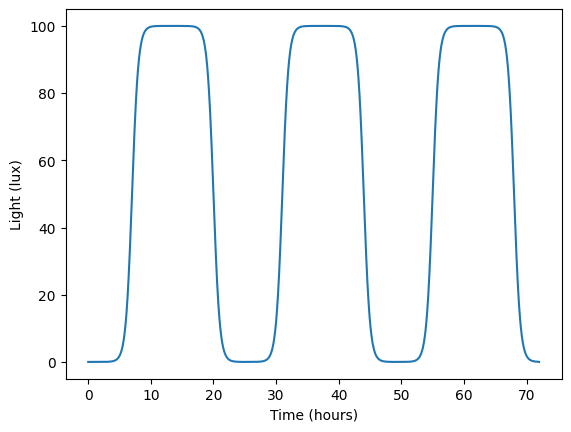
Typically, we would like to create schedules that are composed of on-and-off pulses of light. We can do this via the LightSchedule.from_pulse() function. For example, we can create a periodic schedule with 16 hours of light and 8 hours of darkness by:
on_off_schedule = LightSchedule.from_pulse(100.0, start=8, duration=16.0, period=24.0)
ax = on_off_schedule.plot(0.0, 72.0)
ax.set_ylim(-5, 110);
ax.set_xlabel('Time (hours)');
ax.set_ylabel('Light (lux)');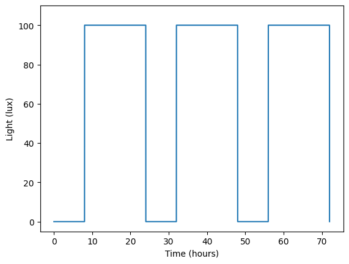
see the API documentation for a description of the parameters that can be passed to LightSchedule.from_pulse(), including adding a baseline to the pulse via baseline.
The resulting LightSchedule objects are callable and return the value of the schedule at the specified times
times = np.linspace(0.0, 72.0, 10)
print(on_off_schedule(times))[ 0. 100. 100. 0. 100. 100. 0. 100. 100. 0.]Addition and subtraction
LightSchedule objects can be combined using the + and - operators. For example, we can add a pulse of light at 40 hours to our on_off_schedule by:
single_pulse = LightSchedule.from_pulse(20.0, start=40, duration=2.0)
combined_schedule = on_off_schedule + single_pulse
ax = combined_schedule.plot(0.0, 72.0)
ax.set_xlabel('Time (hours)');
ax.set_ylabel('Light (lux)');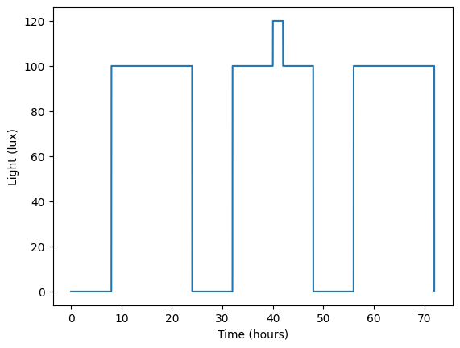
or subtract it:
combined_schedule = on_off_schedule - single_pulse
ax = combined_schedule.plot(0.0, 72.0)
ax.set_xlabel('Time (hours)');
ax.set_ylabel('Light (lux)');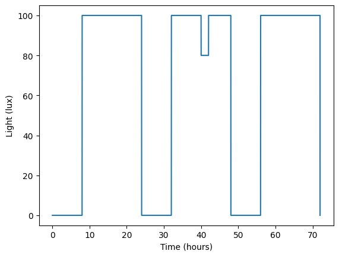
Concatenation
LightSchedule objects can be concatenated in time using the concatenate_at() method. For example, we can create a schedule where the first 48 hours consist of 8 hours of darkness and 16 hours of light, but after that the schedule is constant at 50 lux:
regular_schedule = LightSchedule.from_pulse(100.0, start=8, duration=16.0, period=24.0)
constant_light = LightSchedule(50.0)
concatenated_schedule = regular_schedule.concatenate_at(constant_light, 48.0)
ax = concatenated_schedule.plot(0.0, 72.0)
ax.set_xlabel('Time (hours)');
ax.set_ylabel('Light (lux)');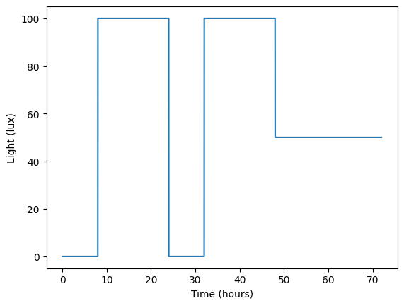
The approach works for all types of schedules. For example, we can concatenate smooth_pulse to on_off_schedule at 28 hours by:
on_off_to_smooth = on_off_schedule.concatenate_at(smooth_pulse, 28.0)
ax = on_off_to_smooth.plot(0.0, 72.0)
ax.set_xlabel('Time (hours)');
ax.set_ylabel('Light (lux)');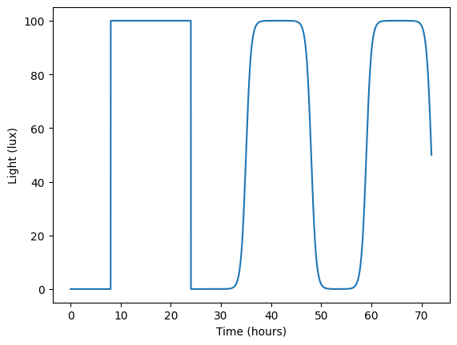
It is important to note that the default behavior of schedule_1.concatenate_at(schedule_2, timepoint) is to shift the time=0 of schedule_2 to timepoint. This can be appreciated if we concatenate the same schedules as above, but with timepoint=40:
on_off_to_smooth = on_off_schedule.concatenate_at(smooth_pulse, 40.0)
ax = on_off_to_smooth.plot(0.0, 72.0)
ax.set_xlabel('Time (hours)');
ax.set_ylabel('Light (lux)');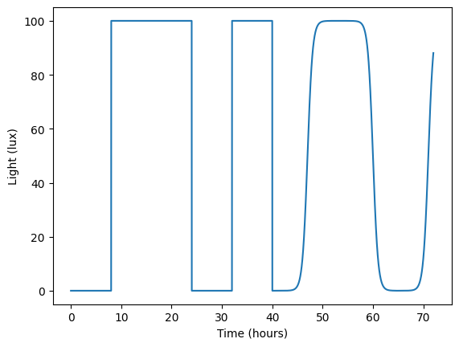
we see that the second on-and-off pulse is suddenly interrupted by the beginning of the smoot pulse. This is because the time=0 of smooth_pulse is shifted to timepoint=40. If we want to concatenate the schedules without shifting the time=0 of schedule_2 (keep the time=0 of schedule_2 aligned with that of schedule_1), we can pass shift=False to the concatenate_at() method:
on_off_to_smooth = on_off_schedule.concatenate_at(smooth_pulse, 40.0, shift_schedule=False)
ax = on_off_to_smooth.plot(0.0, 72.0)
ax.set_xlabel('Time (hours)');
ax.set_ylabel('Light (lux)');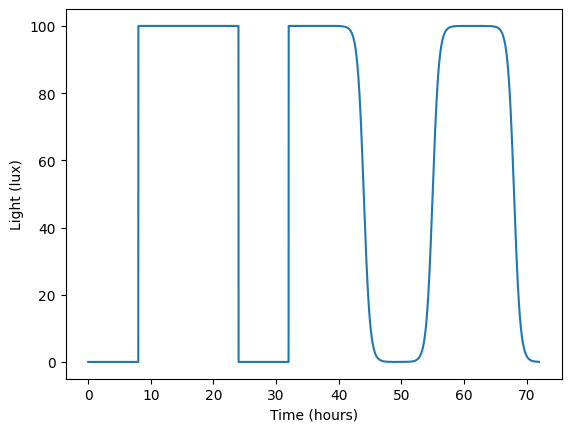
Typical light schedules
The LightSchedule class implements several helper functions to obtain common light schedules:
LightSchedule.Regular: light of a typical dayLightSchedule.ShiftWork: approximation of the usual light for shift workersLightSchedule.SlamShift: light pattern that slam shift workers experience when changing shiftsLightSchedule.SocialJetlag: light pattern experienced by staying up late on weekends
Check out the API documentation for a description of the parameters that can be passed to each function.
Regular light
LightSchedule.Regular is a typical light schedule that repeats every 24 hours. The default schedule is 16 hours of light and 8 hours of darkness, but this can be changed by passing lights_on and lights_off to the constructor.
regular_light = LightSchedule.Regular()
ax = regular_light.plot(0.0, 24*7.0)
ax.set_xlabel('Time (hours)');
ax.set_ylabel('Light (lux)');
ax.figure.set_size_inches(16, 4);
# add a vertical line to the start of each day in dashed gray
for day in range(8):
ax.axvline(day*24.0, color='gray', linestyle='--');
ax.set_xticks(np.arange(0, 24.0*8.0, 12));
ax.set_xlim(0.0, 24.0*7.0);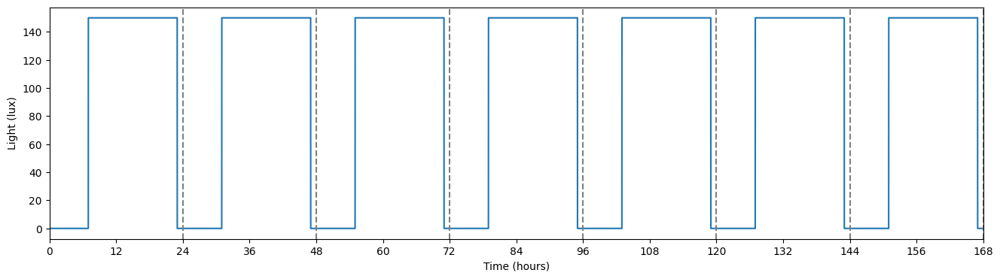
Shift worker
LightSchedule.ShiftWork approximates what a typical light schedule looks for some shift workers. The schedule is periodic over a whole work week (determined by the sum of days_on and days_off) and implements transitions between workdays and days off. The default schedule is:
shift_schedule = LightSchedule.ShiftWork()
ax = shift_schedule.plot(0.0, 24.0*8.0)
ax.set_xlabel('Time (hours)');
ax.set_ylabel('Light (lux)');
ax.figure.set_size_inches(16, 4);
# add a vertical line to the start of each day in dashed gray
for day in range(8):
ax.axvline(day*24.0, color='gray', linestyle='--');
ax.set_xticks(np.arange(0, 24.0*8.0, 12));
days_on = 5
days_off = 2
lights_off_workday = 9.0
lights_on_workday = 17.0
time_last_workday = lights_off_workday + 24*(days_on-1)
time_last_day_off = lights_on_workday + 24.0*(days_on + days_off - 1)
time_first_workday = time_last_day_off + lights_on_workday
# set background color to light red for the workdays
ax.axvspan(0.0, time_last_workday, facecolor='r', alpha=0.1, label='Workdays');
ax.axvspan(time_last_day_off, time_first_workday, facecolor='r', alpha=0.1);
# set background color to light green for days off
ax.axvspan(time_last_workday, time_last_day_off, facecolor='g', alpha=0.1, label='Days off');
# set limits to be a week
ax.set_xlim(0.0, 24.0*7.0);
# place legend at the top of the plot
ax.legend(loc='upper center', bbox_to_anchor=(0.5, 1.15), ncol=2);/tmp/ipykernel_94570/315566313.py:38: DeprecationWarning: Conversion of an array with ndim > 0 to a scalar is deprecated, and will error in future. Ensure you extract a single element from your array before performing this operation. (Deprecated NumPy 1.25.)
float(test_output)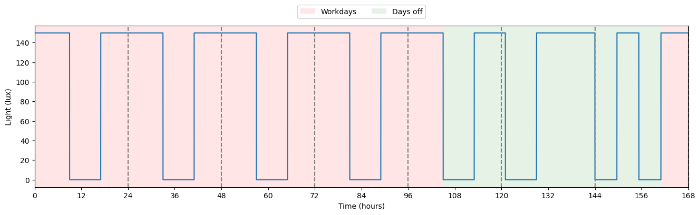
Slam shift
LightSchedule.SlamShift approximates the light schedule that slam shift workers experience when changing shifts. The schedule starts with before_days where the worker is on a regular schedule and then shifts to a new schedule by shift hours. Before the shift happens, there’s a transition via sleep banking. The default schedule is:
slam_shift = LightSchedule.SlamShift()
ax = slam_shift.plot(0.0, 24.0*12.0)
ax.set_xlabel('Time (hours)');
ax.set_ylabel('Light (lux)');
ax.figure.set_size_inches(16, 4);
# add a vertical line to the start of each day in dashed gray
for day in range(13):
ax.axvline(day*24.0, color='gray', linestyle='--');
ax.set_xticks(np.arange(0, 24.0*12.0, 12));
# set background color to light red for the days before the shift
ax.axvspan(0.0, 24.0*5, facecolor='r', alpha=0.1, label='Before shift');
# set background color to light green for days after the shift
ax.axvspan(24.0*5, 24.0*12.0, facecolor='g', alpha=0.1, label='After shift');
# place legend at the top of the plot
ax.legend(loc='upper center', bbox_to_anchor=(0.5, 1.15), ncol=2);
ax.set_xlim(0.0, 24.0*12.0);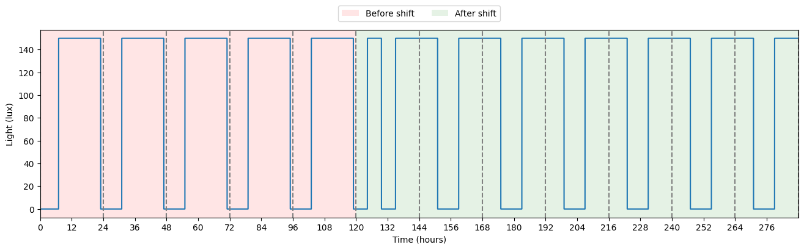
School schedule
LightSchedue.School() implements a light schedule that mimics the light exposure of a school day. The schedule is periodic over the sum of num_school_days and num_weekend_days. There is a prep time for school, and when not in class, light follows an outdoor smooth light function.
school_schedule = LightSchedule.School()
time = np.linspace(0, 24 * 14, 1000)
vals = school_schedule(time)
time_for_plot = time / 24.0
fig = plt.figure(figsize=(16, 4))
ax = fig.add_subplot(111)
ax.plot(time_for_plot, vals)
ax.axvspan(0, 5, color='gray', alpha=0.25, label='Weekdays')
ax.axvspan(7, 12, color='gray', alpha=0.25)
ax.axvspan(5, 7, color='gold', alpha=0.2, label='Weekend')
ax.axvspan(12, 14, color='gold', alpha=0.2)
ax.legend(bbox_to_anchor=(0.5, 1.15), loc='upper center', ncol=2)
ax.set_xlim(0, 14)
ax.set_ylim(-0.25, 15000)
ax.set_yscale("symlog")
ax.set_xlabel("Time (day)")
ax.set_ylabel("Light intensity (lux)")
plt.show()/tmp/ipykernel_94570/315566313.py:38: DeprecationWarning: Conversion of an array with ndim > 0 to a scalar is deprecated, and will error in future. Ensure you extract a single element from your array before performing this operation. (Deprecated NumPy 1.25.)
float(test_output)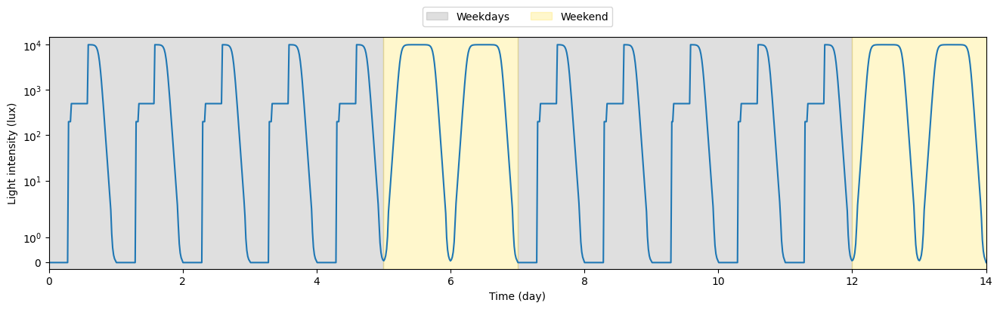
Light schedules used in circadian experiments
The LightSchedule class also implements light schedules that are used in circadian experiments: - LightSchedule.Hilaire12: Implements the schedule from Hilaire et al. 2012 to study the effect of bright light pulses on circadian rhythms
Check out the API documentation for more details.
Light protocol from St. Hilaire et al. 2012
LightSchedule.Hilaire12 implements the light protocol used in Hilaire et al. 2012. The schedule consists of: - A first baseline day with 24 hours of regular_lux=90 lux - A second baseline day with 16 hours of regular_lux=90 lux and 8 hours of darkness - A third day with 16 hours of light and 8 hours of darkness. The 16 hours of light are divided into 8 hours of regular_lux=90 lux and 8 hours of constant_routine_lux=3 lux. - 8 hours of darkness - A constant routine region of first_constant_routine_duration hours with constant_routine_lux=3 lux - 8 hours of darkness - 16 hours of constant_routine_lux=3 lux with a pulse of pulse_lux=8000 lux and pulse_duration hours at the middle of the light period (the pulse’s center is aligned with the center of the light period) - 8 hours of darkness - second_constant_routine_duration hours of constant_routine_lux=3 lux
The only required parameters are first_constant_routine_duration and second_constant_routine_duration which help time the pulse of light relative to the circadian phase. The other parameters have default values following the original paper.
hilaire_schedule = LightSchedule.Hilaire12(30, 48)
time = np.linspace(0, 200, 2000)
light_values = hilaire_schedule(time)
plt.plot(time, light_values)
plt.ylabel('Light (lux)')
plt.xlabel('Time (hours)')
plt.yscale('log')
ax = plt.gca()
ax.figure.set_size_inches(12, 4);
ax.axvspan(0.0, 24*3, facecolor='r', alpha=0.3, label='Baseline days');
ax.axvline(24.0, color='gray', linestyle='--');
ax.axvline(48.0, color='gray', linestyle='--');
ax.axvline(72.0, color='gray', linestyle='--');
ax.axvspan(24*3 + 8, 24*3 + 8 + 30, facecolor='g', alpha=0.3, label='First constant routine (CR1)');
ax.axvspan(24*3 + 8 + 30 + 8 + 7.5,
24*3 + 8 + 30 + 8 + 8.5, facecolor='y', alpha=0.3, label='Pulse');
ax.axvspan(24*3 + 8 + 30 + 8 + 16 + 8,
24*3 + 8 + 30 + 8 + 16 + 8 + 48, facecolor='tab:purple', alpha=0.3, label='Second constant routine (CR2)');
ax.legend(loc='upper center', bbox_to_anchor=(0.5, 1.15), ncol=4);
ax.set_xlim(0.0, 24*3 + 8 + 30 + 8 + 16 + 8 + 48);
plt.show()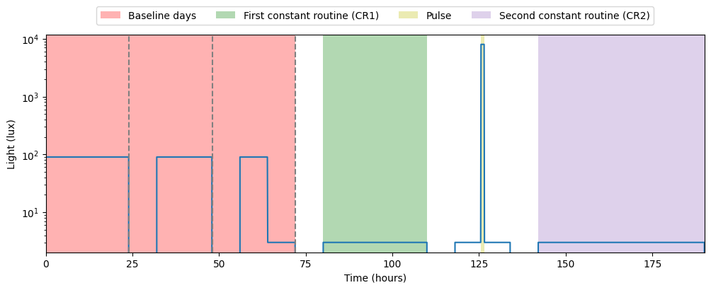
Light protocol from Chang et al. 2014
LightSchedule.Chang14 implements the light protocol used in Chang et al. 2014. In this study, authors explore the effect of light-emitting eBooks on sleep. The schedule spans a total of 14 days. Each week has the same schedule except for the type of light received on reading sessions: - A first day with no reading and dim light between noon and 10pm - A second day with dim light for 6 hours after wake up time (6am), and a reading session on dim light 4 hours before bed (10pm bedtime). The light received from the reading devices is controlled by ereader_lux and book_lux. Which condition happens on the first week is set by first_reading_condition. - Four days of reading consisting of typical_indoor_lux between 6am and 6pm followed by a reading session under dim_lux plus the light received from reading devices
chang_schedule = LightSchedule.Chang14()
time = np.linspace(0, 24 * 14, 100 * 14)
light_values = chang_schedule(time)
plt.plot(time, light_values)
plt.ylabel('Light (lux)')
plt.xlabel('Time (hours)')
ax = plt.gca()
ax.figure.set_size_inches(12, 4)
# axvline every 24 hours
for i in range(15):
ax.axvline(i * 24, color='gray', linestyle='--')
# ebook
for i in range(5):
ax.axvspan(24 * (i + 1) + 18, 24 * (i + 1) + 18 + 4, facecolor='r', alpha=0.3)
# book
for i in range(5):
ax.axvspan(24 * (i + 7) + 18, 24 * (i + 7) + 18 + 4, facecolor='g', alpha=0.3)
# Constant procedure
# Create legend for book and ebook
ax.axvspan(0, 0, facecolor='r', alpha=0.3, label='eReader')
ax.axvspan(0, 0, facecolor='g', alpha=0.3, label='Book')
ax.legend(loc='upper center', bbox_to_anchor=(0.5, 1.15), ncol=2)
plt.show()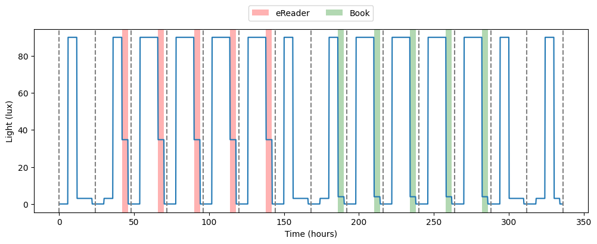
API documentation
LightSchedule
LightSchedule (light:Callable[[float],float], period:float=None)
Helper class for creating light schedules
| Type | Default | Details | |
|---|---|---|---|
| light | Callable | function that takes in a time value and returns a float, if a float is passed, then the light function is a constant set to that lux value | |
| period | float | None | period in hours, if None, then the light pulse is not repeated. Must be positive |
| Returns | None |
LightSchedule.from_pulse
LightSchedule.from_pulse (lux:float, start:float, duration:float, period:float=None, baseline:float=0.0)
Define a light schedule with a single (or a repetitive) light pulse
| Type | Default | Details | |
|---|---|---|---|
| lux | float | light intensity of the pulse in lux. Must be nonnegative | |
| start | float | start time in hours | |
| duration | float | duration in hours. Must be positive | |
| period | float | None | period in hours, if None, then the light pulse is not repeated. Must be positive |
| baseline | float | 0.0 | baseline intensity outside of the light pulse in lux. Must be nonnegative |
| Returns | LightSchedule |
LightSchedule.concatenate_at
LightSchedule.concatenate_at (schedule:__main__.LightSchedule, timepoint:float, shift_schedule:bool=True)
Concatenate two LightSchedules at the provided timepoint. When shift_schedule=True, schedule is shifted in time by timepoint. Not shifted otherwise
| Type | Default | Details | |
|---|---|---|---|
| schedule | LightSchedule | another LightSchedule object | |
| timepoint | float | timepoint (in hours) at which schedules are concatenated | |
| shift_schedule | bool | True | if True, then the schedule is shifted by the timepoint value |
| Returns | LightSchedule |
LightSchedule.plot
LightSchedule.plot (plot_start_time:float, plot_end_time:float, num_samples:int=10000, ax=None, *args, **kwargs)
Plot the light function between start_time and end_time with num_samples samples. Accepts matplotlib *args and **kwargs
| Type | Default | Details | |
|---|---|---|---|
| plot_start_time | float | start time of the plot in hours | |
| plot_end_time | float | end time of the plot in hours | |
| num_samples | int | 10000 | number of samples to plot |
| ax | NoneType | None | matplotlib axis to plot on |
| args | VAR_POSITIONAL | ||
| kwargs | VAR_KEYWORD | ||
| Returns | Axes |
LightSchedule.Regular
LightSchedule.Regular (lux:float=150.0, lights_on:float=7.0, lights_off:float=23.0)
Create a regular light and darkness 24 hour schedule
| Type | Default | Details | |
|---|---|---|---|
| lux | float | 150.0 | intensity of the light in lux |
| lights_on | float | 7.0 | time of the day for lights to come on in hours |
| lights_off | float | 23.0 | time of the day for lights to go off in hours |
| Returns | LightSchedule |
LightSchedule.ShiftWork
LightSchedule.ShiftWork (lux:float=150.0, days_on:int=5, days_off:int=2, lights_on_workday:float=17.0, lights_off_workday:float=9.0, lights_on_day_off:float=9.0, lights_off_day_off:float=24.0)
Create a light schedule for a shift worker
| Type | Default | Details | |
|---|---|---|---|
| lux | float | 150.0 | lux intensity of the light. Must be a nonnegative float or int |
| days_on | int | 5 | number of days on the night shift. Must be a positive int |
| days_off | int | 2 | number of days off shift. Must be a positive int |
| lights_on_workday | float | 17.0 | hour of the day for lights to come on on a workday. Must be between 0.0 and 24.0 |
| lights_off_workday | float | 9.0 | hour of the day for lights to go off on a workday. Must be between 0.0 and 24.0 |
| lights_on_day_off | float | 9.0 | hour of the day for lights to come on on a day off. Must be between 0.0 and 24.0 |
| lights_off_day_off | float | 24.0 | hour of the day for lights to go off on a day off. Must be between 0.0 and 24.0 |
| Returns | LightSchedule |
LightSchedule.SlamShift
LightSchedule.SlamShift (lux:float=150.0, shift:float=8.0, before_days:int=5, starting_lights_on:float=7.0, starting_lights_off:float=23.0)
Create a light schedule for a shift worker under a slam shift
| Type | Default | Details | |
|---|---|---|---|
| lux | float | 150.0 | intensity of the light in lux |
| shift | float | 8.0 | shift in the light schedule in hours |
| before_days | int | 5 | days before the shift occurs |
| starting_lights_on | float | 7.0 | time of the day for lights to come on |
| starting_lights_off | float | 23.0 | time of the day for lights to go off |
| Returns | LightSchedule |
LightSchedule.Hilaire12
LightSchedule.Hilaire12 (first_constant_routine_duration:float, second_constant_routine_duration:float, regular_lux:float=90, constant_routine_lux:float=3, pulse_duration:float=1, pulse_lux:float=8000)
Create a light schedule matching the Hilaire et al. 2012 experimental protocol. Does not include baseline days.
| Type | Default | Details | |
|---|---|---|---|
| first_constant_routine_duration | float | duration of the constant routine in hours | |
| second_constant_routine_duration | float | duration of the second constant routine in hours | |
| regular_lux | float | 90 | intensity of the light in lux before the constant routine |
| constant_routine_lux | float | 3 | intensity of the light in lux during the constant routine |
| pulse_duration | float | 1 | duration of the light pulse in hours |
| pulse_lux | float | 8000 | intensity of the light pulse in lux |
| Returns | LightSchedule |
LightSchedule.Chang14
LightSchedule.Chang14 (dim_lux:float=3.0, typical_indoor_lux:float=90.0, ereader_lux:float=31.73, book_lux:float=0.91, first_reading_condition:str='eReader', reading_start_time:float=18.0, reading_duration:float=4.0)
Create a light schedule matching the Chang et al. 2014 experimental protocol for studying the effect of eReaders on sleep.
| Type | Default | Details | |
|---|---|---|---|
| dim_lux | float | 3.0 | intensity of the light in reading sessions and constant protocols |
| typical_indoor_lux | float | 90.0 | intensity of the light during wakefulness |
| ereader_lux | float | 31.73 | intensity of the light during the eReader session. Photopic lux value taken from article |
| book_lux | float | 0.91 | intensity of the light during the book reading session. Photopic lux value taken from article |
| first_reading_condition | str | eReader | Reading condition for the first set of days. Second reading condition is the opposite |
| reading_start_time | float | 18.0 | time of the day when the reading sessions start |
| reading_duration | float | 4.0 | duration of the reading sessions in hours |
| Returns | LightSchedule |
LightSchedule.School
LightSchedule.School (school_start_time:float=8.0, school_duration:float=6.0, school_lux:float=500.0, school_prep_duration:float=1.0, school_prep_lux:float=200.0, outdoor_light_sunrise_time:float=6.0, outdoor_light_sunset_time:float=18.0, outdoor_peak_lux:float=10000.0, outdoor_baseline_lux:float=0.0, outdoor_light_slope:float=1.0, num_school_days:int=5, num_weekend_days:int=2)
Create a weekly school schedule where students have to wake up for school (with prep time) and when not in school, they are exposed to outdoor light
| Type | Default | Details | |
|---|---|---|---|
| school_start_time | float | 8.0 | time of the day when school starts |
| school_duration | float | 6.0 | duration of the school day in hours |
| school_lux | float | 500.0 | intensity of the light during school hours |
| school_prep_duration | float | 1.0 | duration of the school preparation time in hours |
| school_prep_lux | float | 200.0 | intensity of the light during school preparation |
| outdoor_light_sunrise_time | float | 6.0 | time of the day when the sun rises |
| outdoor_light_sunset_time | float | 18.0 | time of the day when the sun sets |
| outdoor_peak_lux | float | 10000.0 | peak intensity of the outdoor light in lux |
| outdoor_baseline_lux | float | 0.0 | baseline intensity of the outdoor light in lux |
| outdoor_light_slope | float | 1.0 | slope of the outdoor light intensity |
| num_school_days | int | 5 | number of school days in the week |
| num_weekend_days | int | 2 | number of weekend days in the week |
| Returns | LightSchedule |
Social jet lag
LightSchedule.SocialJetlagimplements a light schedule where the person stays up late on weekends while maintaining a regular schedule during the week. The schedule is periodic over the sum ofnum_regular_daysandnum_jetlag_days.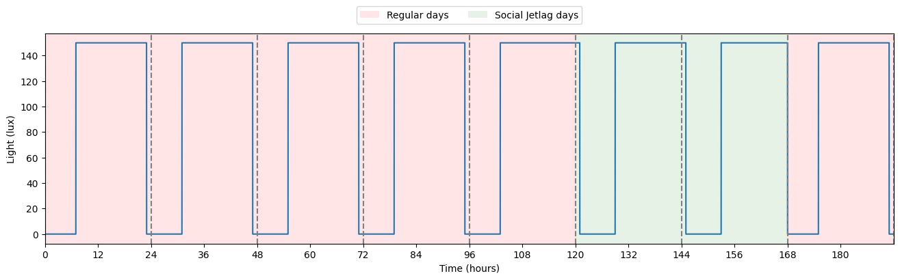